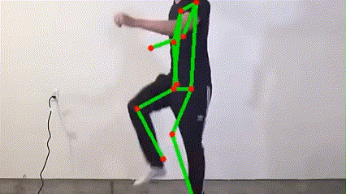
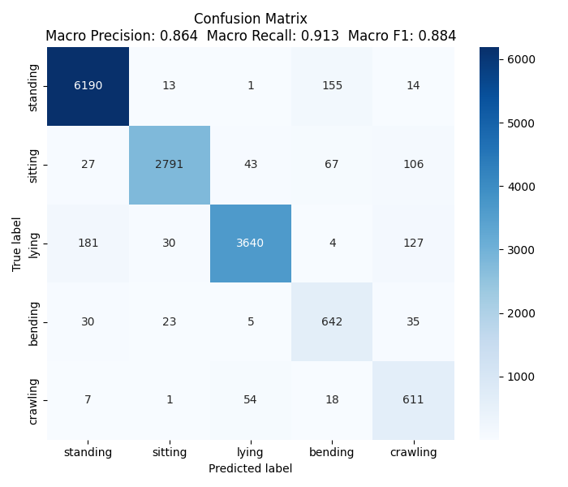
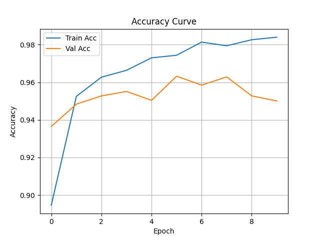
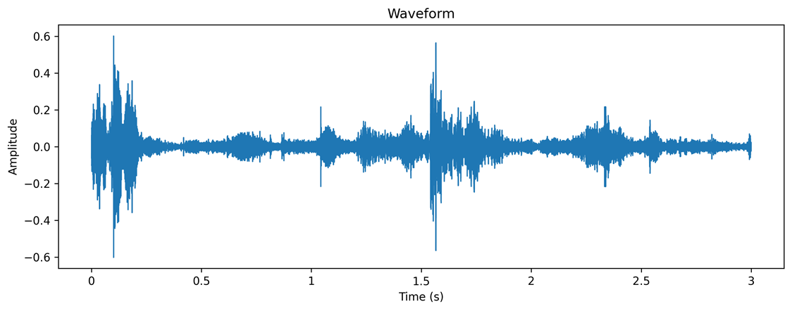
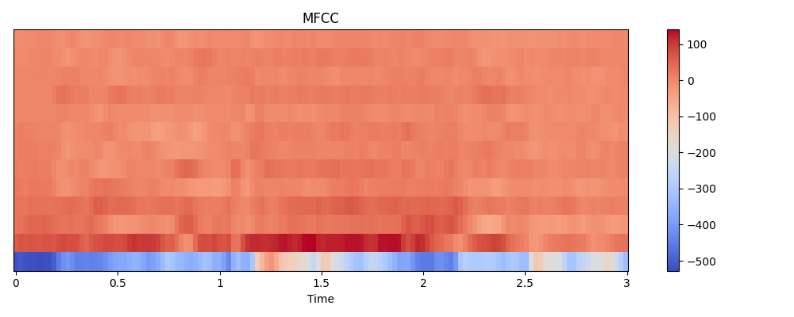
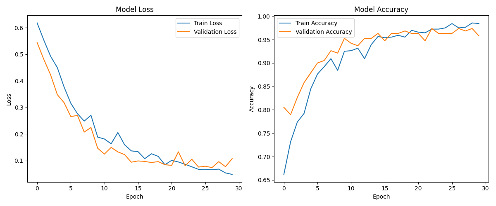
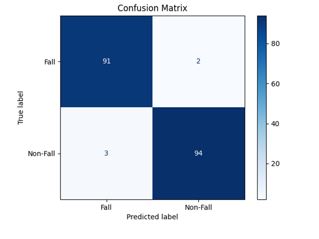
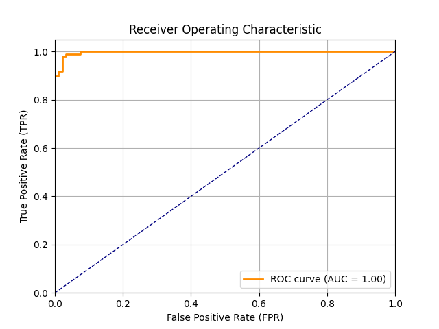
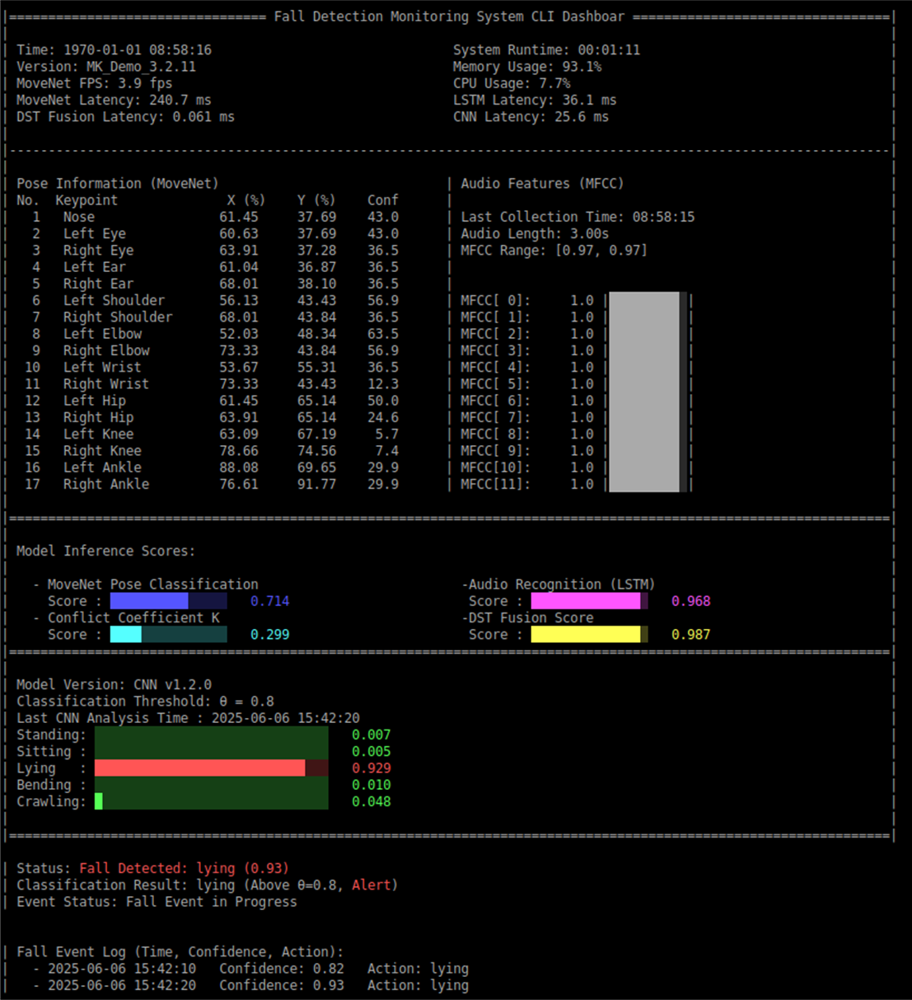

MK Chou
FallFusion is a real-time multimodal fall detection system that integrates visual and audio sensing data. It employs a self-trained CNN model for action classification and an LSTM model for fall sound recognition, applying Dempster-Shafer Theory for decision-level fusion. The system has been successfully deployed on the resource-constrained Jetson Nano 2GB platform, demonstrating efficient memory usage, ONNX model cross-platform integration, and GPIO hardware control capabilities, thereby enhancing overall stability and application feasibility.
With the advent of an aging society, falls have become one of the leading causes of injury and death among the elderly. Traditional detection systems often rely on a single modality (such as cameras or microphones), but:
Therefore, we aim to design a system that can:
Traditional multimodal fusion methods (such as direct score averaging) lack flexibility in handling uncertainty and conflicts. For example:
Directly combining scores in such cases may reduce system accuracy.
How DST addresses these issues:

System architecture flowchart
This system combines vision and sound to detect falls more robustly, all while running on a low-resource embedded device. The core components include:
MoveNet is a high-performance human pose estimation model developed by Google, featuring extremely fast inference speed and high accuracy. Its lightweight design is ideal for deployment on embedded devices such as Jetson Nano, enabling stable and accurate pose analysis even under resource constraints. With MoveNet, the system can instantly capture human motion changes, providing a solid foundation for subsequent fall detection and multimodal fusion.
MoveNet real-time keypoint detection demo

MoveNet applied to fall detection process animation
The system applies the MoveNet ONNX model for human pose estimation, detecting 17 keypoints (e.g., head, shoulders, elbows, knees) and outputting coordinates and confidence scores. These features are used to calculate body tilt angle and center of gravity, serving as the initial basis for fall detection. The process ensures high performance and low latency, suitable for embedded platforms.
To further optimize deployment, MoveNet is quantized to int8 and converted from tflite to onnx format. This significantly reduces model size and computational requirements with minimal impact on inference accuracy, enabling stable operation on resource-limited devices like Jetson Nano while maintaining real-time and precision.
When the DST fusion score exceeds the preset threshold, a custom-trained CNN model is activated for further action classification. This CNN is specifically designed for the system and can classify human actions into five categories (standing, sitting, lying, bending, crawling), providing a confidence score for each. If the confidence for any action exceeds the alert threshold, the system triggers an alarm. This design effectively reduces false alarms and improves the accuracy and reliability of fall detection.
The training dataset used is from Fall Detection Dataset. Each folder contains sequential action images with a CSV file labeling the action type for each image. A total of 15,402 images were processed, split into 80% training and 20% validation sets. During training, both training and validation accuracy and loss are displayed in real time to monitor model learning and generalization.
CNN action classification confusion matrix, showing prediction vs. actual distribution
CNN training and validation accuracy curves
The audio module continuously collects environmental sounds using a microphone, with each recording lasting 3 seconds. After recording, noise reduction and volume normalization are performed, and the audio waveform is converted into MFCC (Mel Frequency Cepstral Coefficient) features for model input. MFCC effectively represents the time-frequency characteristics of sound and is a common feature representation in speech and event recognition.
Original audio waveform
Audio waveform converted to MFCC feature for model input
The audio model is trained using the AFE: Sound Analysis for Fall Event detection dataset, which contains various fall events and daily environmental sounds, with each audio segment labeled as fall-related or not. These annotations help the model learn to distinguish fall sounds from general noise, improving recognition accuracy.
MFCC features are used as input to train the LSTM model for fall sound recognition. The following figures show the LSTM training loss/accuracy curves, test set confusion matrix, and ROC curve, demonstrating the model's excellent performance in classifying fall and non-fall events.
LSTM training loss and accuracy curves
LSTM model confusion matrix on the test set
LSTM model ROC curve, AUC indicates excellent classification ability
This system adopts Dempster-Shafer Theory (DST) as the core of multimodal decision fusion. First, inference results from the visual module (e.g., pose angle, CNN score) and the audio module (LSTM score) are obtained and converted into belief assignments. The DST fusion algorithm then calculates the final fused confidence score based on the individual confidence values, while also producing a conflict coefficient (K) that reflects the degree of disagreement between the two modalities.
Specifically, this system utilizes a late fusion (decision-level fusion) strategy. Instead of directly combining raw sensor data or features, each modality (vision and audio) independently produces its own decision or confidence score. These scores are then fused at the decision level using DST. This approach allows each model to fully leverage its strengths and makes the overall system more robust to noise or errors in any single modality. Late fusion is especially suitable for scenarios where sensor characteristics and data types differ significantly, as in this fall detection application.
The system is also designed to flexibly support different sensors and threshold settings for various environments. Depending on the deployment scenario, users can select the most appropriate combination of sensors (e.g., only vision, only audio, or both) and adjust the fusion or alert thresholds accordingly. This adaptability ensures optimal performance and reliability whether in a quiet home, a noisy public space, or other specialized settings.
When the DST fused confidence score exceeds a preset threshold, the system further activates the CNN model for multi-class action verification. If the CNN determines a high-risk action (such as lying or crawling) and the confidence exceeds the alert threshold, an alert signal (e.g., buzzer, LED) is triggered and the event is logged in the CLI Dashboard.
One major advantage of DST is its ability to dynamically handle conflicts between modalities. For example, when the visual and audio modules produce opposite results, DST calculates the conflict coefficient K and automatically adjusts the weights, assigning trust to the more reliable source. This prevents system failure due to misjudgment by a single modality.
DST-based fusion and decision-making significantly enhance the system's robustness and accuracy. Even when a single sensor is disturbed (e.g., poor lighting, environmental noise), the system can still make stable judgments based on multimodal information, reducing false alarms and missed detections. This makes it suitable for long-term automated monitoring applications.
The CLI Dashboard adopts a pure text-based interface, presenting information in clear tables and blocks, with color coding (e.g., red for alerts, green for normal) to enhance instant recognition. The interface is concise and easy to read, suitable for embedded devices and remote terminal operation.
The CLI interface displays multiple key pieces of information in real time, including:
The lower part of the interface records all fall events with time, confidence score, and action type for easy query and tracking. When an alert is triggered, it is clearly marked, and users can confirm or reset events directly via the CLI.
The CLI Dashboard runs on various operating systems and supports remote SSH connections, making it ideal for embedded platforms (such as Jetson Nano) or server-side deployment. Its lightweight nature ensures smooth operation even in resource-constrained environments.
The CLI interface enables on-site personnel or remote maintenance engineers to instantly grasp system status, quickly respond to abnormal events, and serves as a foundation for long-term monitoring and data analysis. It is especially valuable in environments where graphical interfaces are unavailable (e.g., factories, edge devices).
CLI Dashboard monitoring interface demo
The following table summarizes the key specifications, runtime behavior, and accuracy of the multimodal system, including CNN, LSTM, and DST fusion. This unified view allows for easy comparison of all core metrics.
| Model | Input Shape | Inference Latency | Accuracy | DST Fusion Latency | Status |
|---|---|---|---|---|---|
| CNN (5-class) | 192×192×4 | 20-40 ms | 87.4% | - | Deployed |
| LSTM (Audio) | 1×8×40 (MFCC) | 30-50 ms | 86.3% | - | Deployed |
| Pose Estimation | - | 250-350 ms | - | - | Deployed |
| DST Fusion | - | - | - | 50-60 us | Under evaluation |
This table demonstrates a multimodal system that combines CNN and LSTM for action analysis and pose estimation, leveraging DST fusion to further enhance overall performance. The system uses different input formats (image and audio features) and is designed for robust, real-time operation in diverse environments.